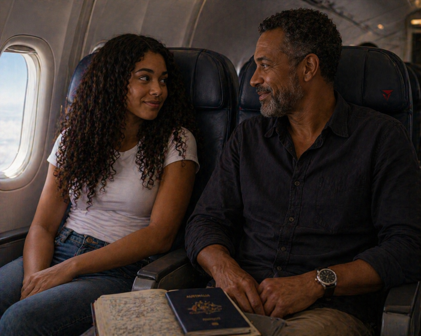
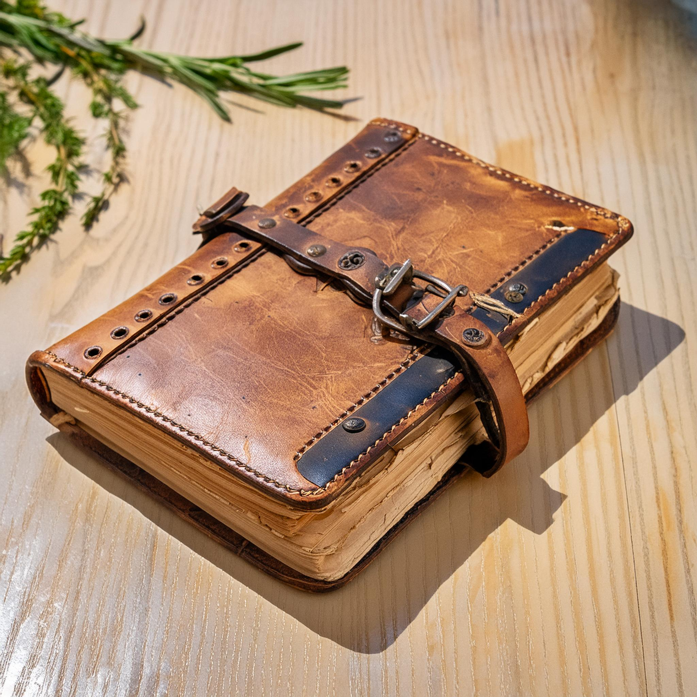

| The helicopter touched down near the airport terminal, the blades slowing as Brooklyn climbed out, still trying to process everything that had happened. Standing just beyond the landing area was her uncle, waving with a mix of relief and confusion on his face. As she walked toward him, he looked her up and down, clearly surprised. She began explaining—Thailand, Hawaii, the pyramid, the cave—each part sounding more unbelievable than the last. He listened carefully, then shook his head with a half-smile, taking the notebook she clutched from her grasp. He opened to the front page and tucked inside the cover was a note. It clearly asked her to wait for him to return to Australia before starting anything. | |
 |
Brooklyn’s expression shifted as the realisation sank in. Her uncle explained that the debit card had been included as a birthday gift, meant for something simple—not flights around the world chasing clues she wasn’t supposed to follow yet. There was a moment of silence before they both laughed, the tension finally easing. Together, they made their way toward the terminal, deciding it was time to head home properly this time. As they boarded the plane back to Australia, Brooklyn looked out the window, knowing the adventure wasn’t over—it had just begun the way it was meant to. |
 Back to Start |
 Google Google |